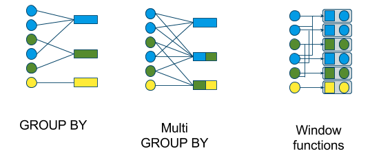

9 Aggregated calculations
Aggregated calculations are vital for feature engineering. Every data scientist, data engineer, or ML engineer must have this logic accessible for use. For example, we may want to know the number of employees in each business unit, the sales by month, or the average traffic per hour at a given location.
Sometimes, we are creating a new dimension table based on the grouping variable. Other times, we will want to keep our observational unit of the original table but add additional columns with the summary variable appended. In SQL, we will differentiate the two calculations by the GROUP BY method and the PARTITION BY method.

Here are example calculations using Pyspark and SQL.
We have our default DataFrame for the below examples.
import pandas as pd
# create pandas dataframe
pdf = pd.DataFrame({'Section':[1,2,2,3,3,3], 'Student':['a','b','c', 'd', 'e','f'], 'Score':[90, 85, 75, 95, 65, 98]})
# convert to spark dataframe assumping your spark instance is created.
df = spark.createDataFrame(pdf)| Section | Student | Score |
|---|---|---|
| 1 | a | 90 |
| 2 | b | 85 |
| 2 | c | 75 |
| 3 | d | 95 |
| 3 | e | 65 |
| 3 | f | 98 |
Using the above df we can create a temporary view in Spark;
9.1 GROUP BY
When using ‘GROUP BY’ functions or methods in the varied languages of data science, the resulting table’s observational unit (row) is defined by the levels of the variable used in the ‘GROUP BY’ argument. We move from many rows to fewer rows, as shown in the two leftmost tables of the above image.
9.1.1 Language-specific help files
The GROUP BY methods of each language are combined with their respective calculation process.
9.1.2 Examples
The following two examples result in an average and standard deviation for each section.
| Section | average | sd |
|---|---|---|
| 1 | 90 | nan |
| 2 | 80 | 7.07107 |
| 3 | 86 | 18.2483 |
9.1.2.1 Pyspark
9.1.2.2 SQL
9.2 Window
At its core, a window function calculates a return value for every input row of a table based on a group of rows, called the Frame. Every input row can have a unique frame associated with it. This characteristic of window functions makes them more powerful than other functions and allows users to express various data processing tasks that are hard (if not impossible) to be expressed without window functions in a concise way. ref
9.2.1 Language-specific help files
9.2.2 Examples
Here are example calculations using Pyspark and SQL. Using the example table above, we want to create the following table.
And we want the following table.
| Section | Student | Score | rank | min |
|---|---|---|---|---|
| 1 | a | 90 | 1 | 90 |
| 2 | b | 85 | 1 | 75 |
| 2 | c | 75 | 2 | 75 |
| 3 | d | 95 | 2 | 65 |
| 3 | e | 65 | 3 | 65 |
| 3 | f | 98 | 1 | 65 |
9.2.2.1 Pyspark
from pyspark.sql import Window
import pyspark.sql.functions as F
window_order = Window.partitionBy('Section').orderBy(F.col('Score').desc())
window = Window.partitionBy('Section')
df.withColumn("rank", F.rank().over(window_order)) \
.withColumn("min", F.min('Score').over(window)) \
.sort('Student') \
.show()9.2.2.2 SQL
Then, we can use the following SQL command.
9.2.3 Describing Window calculations
I especially like TMichel’s response that has the highest vote. Although the second response by KARTHICK seems to be the best answer to this specific question. Here is how TMichel explains the Window method in Pyspark (with minor edits by me).
Here is a dissection of the details of a Window example in Pyspark.
Using collect_list() and groupBy() will result in an unordered list of values. Depending on how your data is partitioned, Spark will append values to your list as soon as it finds a row in the group. The order then depends on how Spark plans your aggregation over the executors.
Assume we have the following data.
| id | date | value |
|---|---|---|
| 1 | 2014-01-03 | 10 |
| 1 | 2014-01-04 | 5 |
| 1 | 2014-01-05 | 15 |
| 1 | 2014-01-06 | 20 |
| 2 | 2014-02-10 | 100 |
| 2 | 2014-03-11 | 500 |
| 2 | 2014-04-15 | 1500 |
A Window function allows you to control that situation, grouping rows by a specific value so you can operate over each of the resultant groups:
partitionBy()- you want groups/partitions of rows with the same idorderBy()- you want each row in the group to be sorted by date
The defined Window scope (rows with the same id, sorted by date) then frames the collect_list operation.
At this point, the dataframe has a created a new column sorted_list with an ordered list of values, sorted by date.
| id | date | value | sorted_list |
|---|---|---|---|
| 1 | 2014-01-03 | 10 | [10, 5, 15, 20] |
| 1 | 2014-01-04 | 5 | [10, 5, 15, 20] |
| 1 | 2014-01-05 | 15 | [10, 5, 15, 20] |
| 1 | 2014-01-06 | 20 | [10, 5, 15, 20] |
| 2 | 2014-02-10 | 100 | [100, 500, 1500] |
| 2 | 2014-03-11 | 500 | [100, 500, 1500] |
| 2 | 2014-04-15 | 1500 | [100, 500, 1500] |
9.3 Example Data
from pyspark.sql import functions as F
date_data = [
(1, "2014-01-03", 10 ), \
(1, "2014-01-04", 5), \
(1, "2014-01-05", 15), \
(1, "2014-01-06", 20), \
(2, "2014-02-10", 100), \
(2, "2014-03-11", 500), \
(2, "2014-04-15", 1500)
]
date_columns = ["id", "date", "value"]
df_date = spark.createDataFrame(data = date_data, schema = date_columns)\
.withColumn("date", F.to_date("date"))
student_data = [
(1, "a", 90), \
(2, "b", 85), \
(2, "c", 75), \
(3, "d", 95), \
(3, "e", 65), \
(3, "f", 98) \
]
student_columns = ["Section", "Student", "Score"]
df = spark.createDataFrame(data = student_data, schema = student_columns)9.4 References
- How orderBy affects Window.partitionBy in Pyspark dataframe? - Stack Overflow
- PySpark Window Functions - Spark By {Examples}
- Introducing Window Functions in Spark SQL | Databricks Blog
- Spark Window Function - PySpark – KnockData – Everything About Data
- Python pandas equivalent to R groupby mutate - Stack Overflow
- Spark Window Functions with Examples - Spark By {Examples}